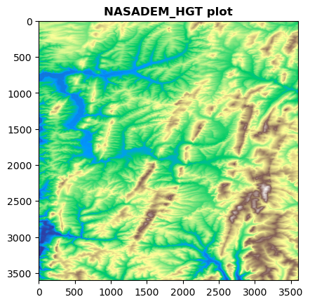

Finally, you may activate and select the kernel in the notebook (running in Jupyter)
conda activate coguide-cog
The notebook has been tested to work with the listed Conda environment.
Setup
This tutorial will explore accessing a regular GeoTIFF (Non-COG), converting it to Cloud-Optimized GeoTIFF (COG) format with Python and validate the data inside the COG and Non-COG.
About the Dataset
We will be using the NASADEM Merged DEM Global 1 arc second V001 from the NASA EarthData. To access NASA EarthData into Jupyter Notebook, you can create an account by visiting NASA’s Earthdata Login page. This will enable you to register for an account and retrieve the datasets used in the notebook.
We will use earthaccess library to set up credentials to fetch data from NASA’s EarthData catalog.
/opt/homebrew/anaconda3/envs/coguide-cog/lib/python3.11/site-packages/tqdm/auto.py:21: TqdmWarning: IProgress not found. Please update jupyter and ipywidgets. See https://ipywidgets.readthedocs.io/en/stable/user_install.html
from .autonotebook import tqdm as notebook_tqdm
earthaccess.login()
<earthaccess.auth.Auth at 0x105269c10>
Creating a Data Directory for this Tutorial
We are creating a data directory for downloading all the required files locally.
# set data directory pathdata_dir ='./data'# check if directory exists -> if directory doesn't exist, directory is createdifnot os.path.exists(data_dir): os.mkdir(data_dir)
Downloading the Dataset from EarthData
We are using search_data method from the earthaccess module for searching the Granules from the selected collection.
# Download Data - Selecting the 2nd file from the `dem_item_results` listnasa_dem_files = earthaccess.download(dem_item_results[1], data_dir)nasa_dem_filename =f"{nasa_dem_files[0]}"print(nasa_dem_filename)
We will use rasterio to read the downloaded zip file. The rasterio.open uses GDAL’s virtual filesystem interface to access local ZIP datasets. This requires prepending zip to the local zip file URI and adding the internal location to the dataset file after the ! character. For more details, refer here.
It is required to prepend zip:// for accessing the HGT file using a relative path. However, if we want to use an absolute path, then zip:/// should be preprended. Readers are encouraged to follow GDAL virtual file systems read capabilities for more details.
Additionally, we will be using rasterio.open in a rasterio.Env so as to define the GDAL_DRIVER_NAME for opening the SRTM files. GDAL has an in-built SRTMHGT driver for opening the SRTM HGT file formats. The SRTM zip files consists of HGT files named like nXXeYYY.hgt. For eg, the downloaded file NASADEM_HGT_n57e105.zip consists of n57e105.hgt. The readers are recommended to follow the SRTM documentation for more details.
# Getting current working directorybase_dir = os.getcwd()#Extracting nXXXeXXX information from the filenamezip_filename = nasa_dem_filename.split('/')[-1].split('_')[-1] # n57e105.hgthgt_filename = zip_filename.replace('zip', 'hgt')# "zip://data/NASADEM_HGT_n57e105.zip!n57e105.hgt"hgt_file_path ="zip://"+ nasa_dem_filename +f"!{hgt_filename}"
#Reading the HGT file using `SRTMHGT` GDAL driverwith rasterio.Env(GDAL_DRIVER_NAME='SRTMHGT'):with rasterio.open(hgt_file_path) as src: arr = src.read() kwargs = src.meta
Let’s explore the dataset by printing the metadata and plotting it. Some of the parameter values from this metadata will be used later in this notebook while creating COGs, for eg. nodata value.
from rasterio.plot import showshow(arr[0], cmap ='terrain', title="NASADEM_HGT plot")

Converting to Cloud-Optimized GeoTIFF (COG)
There are multiple ways to write a COG in Python. We are presenting the recommended approach based on rio_cogeo.cog_translate method using the Memoryfile. This approach is found to be efficient for writing big GeoTIFF files in cloud-optimized format along with copying the overviews and input dataset metadata. Also, we use the default “deflate” COG profile for writing the COGs. This can be defined to any of the existing COG profiles.
Some of the recommendations while generating COGs are noted below -
Using WEBP compression for RGB or RGBA dataset (there is a lossless option). Although, this is considered as a best option if you are looking for space saving, JPEG compression might be considered a safer choice.
Using Deflate compression with PREDICTOR=2 and ZLEVEL=9 options for non-Byte or non RGB datasets. The PREDICTOR value is set for LZW, DEFLATE and ZSTD compression. PREDICTOR=2 or standard predictor is used for integer data type and PREDICTOR=3 or floating-point predictor is used for floating point data type.
Using internal overviews.
Using a internal block size of 256 or 512
# Defining the output COG filename# path = data/NASADEM_HGT_n57e105_COG.tifcog_filename = nasa_dem_filename.replace(".zip", "_COG.tif")# Setting to default GTiff driver as we will be using `rio-cogeo.cog_translate()`# predictor=2/standard predictor implies horizontal differencingkwargs.update(driver="GTiff", predictor=2)with MemoryFile() as memfile:# Opening an empty MemoryFile for in memory operation - fasterwith memfile.open(**kwargs) as mem:# Writing the array values to MemoryFile using the rasterio.io module# https://rasterio.readthedocs.io/en/stable/api/rasterio.io.html mem.write(arr) dst_profile = cog_profiles.get("deflate")# Creating destination COG cog_translate( mem, cog_filename, dst_profile, use_cog_driver=True, in_memory=False )
/var/folders/h7/l61pvww15kz03l7fxjhts_wr0000gp/T/ipykernel_40851/4074752627.py:18: RasterioDeprecationWarning: Source dataset should be opened in read-only mode. Use of datasets opened in modes other than 'r' will be disallowed in a future version.
cog_translate(
Reading input: <open DatasetWriter name='/vsimem/ae8e0898-8d08-4394-a034-817d492e0e04/ae8e0898-8d08-4394-a034-817d492e0e04.tif' mode='w+'>
Adding overviews...
Updating dataset tags...
Writing output to: data/NASADEM_HGT_n57e105_COG.tif
Validating the Generated COG
We can validate the generated COG using the rio_cogeo.cog_validate. The cog_validate method returns following outputs: * is_valid: bool
True if ‘src_path’ is a valid COG. * errors: list
List of validation errors if is_valid returns False. * warnings: list
List of validation warnings if is_valid returns False.
cog_validate(cog_filename)
(True, [], [])
As we can see, the generated COG is a valid COG.
Run validation tests
The cog_validate method runs on the COG file. Let’s try to run a validation test on the arrays representing the COG and Non-COG file using Numpy’s assert_array_equalmethod.
# Reading the generated COG filewith rasterio.open(cog_filename) as src: arr_cog = src.read()
# Would not output anything if both the COG and non-COG files have equal valuesnumpy.testing.assert_array_equal(arr, arr_cog)
Generating Overviews and Setting NoData Values
It is recommended to generate COGs with overviews and define nodata values in the COGs. The Cloud Optimized Geotiff (COG) Overview Resampling notebook provides in-depth explanation for generating and visualizing overviews. Here, we will see how to -
Generate COGs with overviews in Python.
Overviews are decimated views created for visualization. By default, rio-cogeo calculates optimal overview levels based on dataset size and internal tile size, since overviews should not be smaller than internal tile size.
Set nodata values while generating COGs.
Typically, while creating a COG from a Non-COG TIFF, the nodata value can be set to the value defined in the source GeoTIFF metadata (in this case -32768.0). Otherwise, the nodata value can be set based on the datatype used for storing the data. For int type, the largest negative value or -9999 is used. Similarly, float type has a nodata option and Byte has a mask band to define the nodata value.
# Defining the output COG filename# path = data/NASADEM_HGT_n57e105_COG.tifcog_ovr_filename = nasa_dem_filename.replace(".zip", "_ovr_COG.tif")# Setting to default GTiff driver as we will be using `rio-cogeo.cog_translate()`# predictor=2 for INT typekwargs.update(driver="GTiff", predictor=2)# Setting the recommended blocksize for internal tiling to 512 per recommendationskwargs.update({"blockxsize": "512", "blockysize": "512"})# Setting the overview level, by default it is inferred from the data size# Uncomment below to generate overviews on 2 levels# kwargs.update({"overview_level": 2})with MemoryFile() as memfile:# Opening an empty MemoryFile for in memory operation - fasterwith memfile.open(**kwargs) as mem:# Writing the array values to MemoryFile using the rasterio.io module# https://rasterio.readthedocs.io/en/stable/api/rasterio.io.html mem.write(arr) dst_profile = cog_profiles.get("deflate")# Creating destination COG cog_translate( mem, cog_ovr_filename, dst_profile, nodata=-32768.0, #Set NoData= -32768.0 from the metadata use_cog_driver=True, in_memory=False )
/var/folders/h7/l61pvww15kz03l7fxjhts_wr0000gp/T/ipykernel_40851/3228781361.py:26: RasterioDeprecationWarning: Source dataset should be opened in read-only mode. Use of datasets opened in modes other than 'r' will be disallowed in a future version.
cog_translate(
Reading input: <open DatasetWriter name='/vsimem/4fa25e3f-7741-4f4b-849a-fa1b295b6527/4fa25e3f-7741-4f4b-849a-fa1b295b6527.tif' mode='w+'>
Adding overviews...
Updating dataset tags...
Writing output to: data/NASADEM_HGT_n57e105_ovr_COG.tif